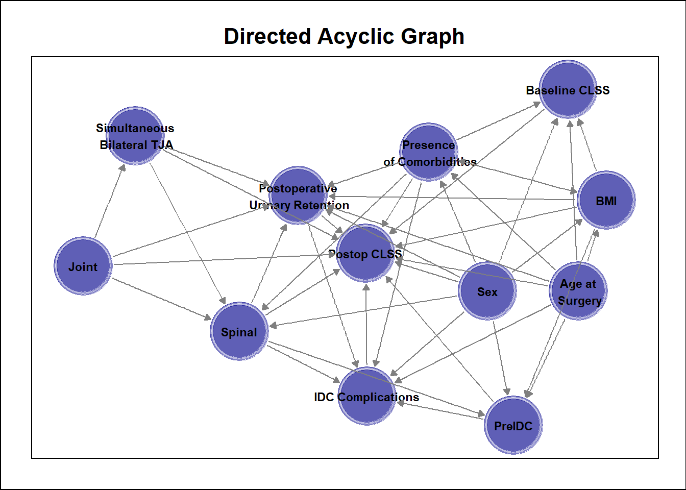
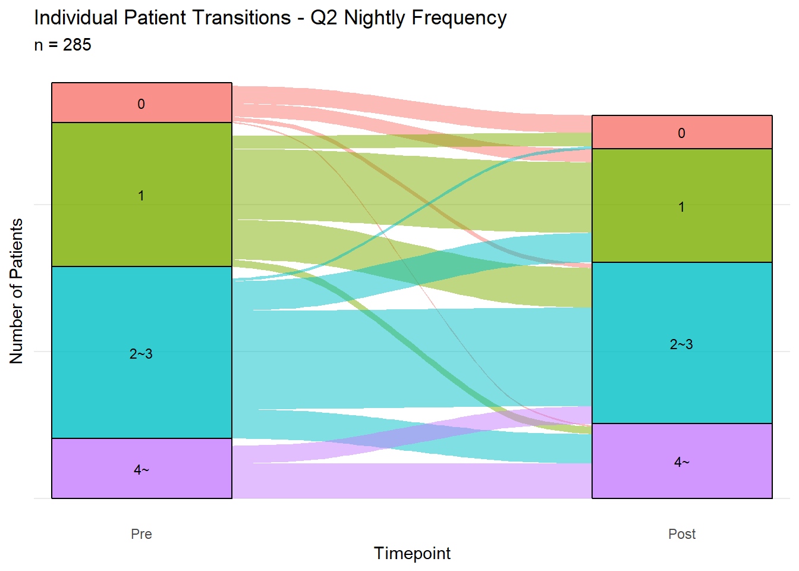

Pre-emptive or reactive in-dwelling catheterisation does not impact patient-reported urinary symptoms following lower limb arthroplasty: A prospective cohort study in a metropolitan public hospital.
0.1 Preamble
Author Affiliation: EBM Analytics
Client | Sponsor: Lorenzo Calabro, QEII Orthopaedics Department, Metro South
EBMAReference: Pub_Catheterisation_CB030Jun20
Version: 1.0
This analysis is a companion piece to the manuscript of the project. The analysis report has been organised as per the STROBE guidelines and checklist (Vandenbroucke et al. 2007). The contents of the sections has been derived from the manuscript (partly completed at the time of drafting), the protocol approved by the local health district HREC 13-Jun-2023, as well as an earlier study viability report generated by EBMA, and the results of the analysis, where appropriate.
0.2 Reporting
The study was reported according to the STROBE guidelines (Vandenbroucke et al. 2007) and companion checklist.
The analysis was generated using R (2023) R.Version()$version.string in RStudio (v2024.12.1+563) and Quarto (v1.4.549) with appropriate specialised packages as required. Citations are applied to each library at first use in the text. Code and text were combined within the report using the epoxy package (v1.0.0) (Aden-Buie 2023). The following actions were performed;
Data import and preparation
Sample selection
Describe and address missingness
Data manipulation, modelling and visualisation of;
Patient characteristics
Treatment characteristics
Adverse events and complications
Patient reported outcomes
Publish to web for dissemination
0.3 STROBE [1] Title:
The title has been expressed in a declarative statement regarding the main findings and suggested as the following;
Pre-emptive or reactive in-dwelling catheterisation does not meaningfully impact patient-reported urinary symptoms following lower limb arthroplasty: A prospective cohort study in a metropolitan public hospital.
0.4 STROBE [1] Abstract:
To be finalised as part of manuscrupt.
1 Analysis Introduction:
The rationale for the study and justification can be found in the viability reports conducted prior to project initiation.
1.1 Analysis Preparation
Required packages were loaded in advance using the pacman package (v0.5.1) (Rinker and Kurkiewicz 2018); check if packages are installed, if not, install them.
1.3 STROBE [2] Background
Background material has been provided in the linked reports (see Analysis Introduction).
Additional notes are included below;
- Urinary infection can potentially lead to hematogenous seeding of a prosthetic joint with bacteria, resulting in periprosthetic joint infection (PJI) (Meddings et al. 2010)
1.4 STROBE [3] Objectives
We sought to characterise the rate of patient reported urinary complications, and patient satisfaction with urinary management following elective hip and knee arthroplasty. Our secondary aim was to identify the patient and surgical factors predicting the incidence and severity of urinary complications following lower limb arthroplasty.
The study objectives have evolved over time. The original study question as per the study plan was the following;
| Component | Study-Specific |
|---|---|
| Population | In patients electing to undergo hip or knee total arthroplasty with one of four participating surgeons in a metropolitan public hospital |
| Intervention | How do those that report a change in urinary symptoms between pre-admission clinic and 21 days after surgery differ to |
| Comparator | Those that do not report a change in symptoms |
| Outcomes | Primary: In patient characteristics, baseline symptoms and management factors Secondary: In satisfaction with urinary management/incidence of POUR at 2-week follow-up |
| Study Design | Within an observational cohort design embedded into the SHARKS registry (QEII Orthopaedic Department) |
| Component | Study-Specific |
|---|---|
| Population | In patients electing to undergo hip or knee total arthroplasty with one of four participating surgeons in a metropolitan public hospital |
| Intervention | Receiving pre-emptive urinary catheterisation |
| Comparator | Compared to those that do not |
| Outcomes | How do i) urinary symptoms as measured by the core lower urinary tract symptom score (CLSS) and ii) satisfaction with urinary management in-hospital at two weeks followup differ? |
| Study Design | Within an observational cohort design embedded into the SHARKS registry (QEII Orthopaedic Department) |
1.4.1 Hypotheses
| Question | Clinical | Statistical |
|---|---|---|
| 1 |
|
H1: The predicted probability of a change in urinary symptoms by a multivariable model will be closer to actual probabilities than expected by chance H0: The predicted probability of a change in urinary symptoms by a multivariable model will not be closer to actual probabilities than expected by chance |
| 1 | Patients with symptoms will tend to be less satisfied with the management received for managing POUR | |
| 2 | Patients receiving reactive catheterisation on the recovery ward in response to image-detected urinary retention will report worse CLSS and satisfaction at two week follow up | H1: The predicted probability of a postoperative urinary symptoms by a multivariable model will be closer to actual probabilities than expected by chance H0: The predicted probability of a change in urinary symptoms by a multivariable model will not be closer to actual probabilities than expected by chance |
2 Methods:
2.1 STROBE [4] Study Design:
Observational cohort study embedded into a department clinical quality registry for lower limb arthroplasty (SHARKS), with pre-post assessment of patient-reported outcomes.
2.2 STROBE [5] Setting:
The study setting is an orthopaedic department within a medium-sized metropolitan public hospital in a capital city of Australia. The analysis and data collection were sampled from all eligible arthroplasty cases from the commencement date of the study to the time of initial analysis. It is asserted that the setting is representative of orthopaedic care in Australia and possesses sufficient equivalence for consideration internationally.
2.3 STROBE [6] Participants:
Patients were approached to participate if they were booked to undergoing primary lower limb total joint arthroplasty (hip or knee) within the orthopaedic department and were presenting for preoperative anaesthetic workup between November 2020 and June 2023 under the care of a surgeon contributing to the department registry (SHARKS).
Patients were excluded for the following reasons
Underwent surgery for different condition
Surgery was not primary
Surgery did not go ahead as planned (not rescheduled within recruitment time period) | removed from surgery wait list
Comorbidity specific to the urinary system
Underwent surgery under the care of a consultant not contributing to the registry
Did not possess adequate English skills to answer the PROMs
2.4 STROBE [7] Variables:
Before the commencement of data collection, a core dataset for the study was derived and agreed to by the project investigators to establish the key variables for the study.
2.4.1 Exposure
The primary exposure variable was the status of in-dwelling catheterisation prior to the arthroplasty procedure (preemptive IDC). Patients were pre-emptively catheterised based on the preference of the treating surgeon in collaboration with the attending anaesthetist.
The secondary exposure variable was the status of in-dwelling catheterisation as a treatment for postoperative urinary retention (POUR) detected immediately after the arthroplasty procedure.
POUR was defined clinically by the treating consultant in collaboration with the shift nursing staff.
2.4.2 Outcome(s)
The primary outcome was the total score derived from the core lower urinary tract symptom score (CLSS) (Homma et al. 2008). The CLSS is an 11-question self-reported questionnaire that provides overall assessment of relevant symptoms of the lower urinary tract.
2.4.3 Model Covariates
Although there was an attempt to construct a DAG (directed acyclic graph) (Tennant et al. 2020) during the study plan, it was decided to revise the graph as part of this analysis. The ggdag package (v0.2.13) (Barrett 2024) combined with ggplot2 (v3.5.1) were used to create the DAG and calculate the minimum adjustment set, with knitr (v1.49) (Xie 2024) used to display the figures.
The candidate variables were summarised in the table below
| Variable | Related to PreIDC | Related to Postop Symptoms | Comments |
|---|---|---|---|
| Age | Related to risk of POUR (Cha et al. 2020) | Assumed | |
| Sex | Related to risk of POUR (Cha et al. 2020) | Assumed | |
| BMI (Body Mass Index) | Associated with POUR in males (Scholten et al. 2018) | Unknown | Other studies have not detected relationship between BMI and POUR |
| Bilateral | Simultaneous bilateral procedures | Unknown | |
| Joint | Related to risk of POUR (Peng et al. 2022) | ||
| BaseCLSS | Not seen by clinicians | Assumed | Included to reduce model standard errors |
| Comorbidities | Related to risk of POUR (Tischler et al. 2016) | Assumed | |
| IntraopFluid | Intent or perceived likelihood of high volume may influence decision | Possible mediator variable | |
| POUR | The perceived risk of POUR is likely a factor in decision | POUR occurrence assumed to be associated with PROMs | Possible mediator variable |
| IDCComplic | In-dwelling catheterisation increases infection risk (Ma and Lu 2019) | Assumed | Possible mediator variable |
| SpinalAnaesthesia | Associated with POUR (Scholten et al. 2018) | Possible mediator variable; Unless decision to PreIDC is based on SpinalAnaes intent |
Define the graph
Create minimal adjustment set
2.5 STROBE [8] Data Sources/Measurement
Data for the study were retrieved in the first instance to a cloud-based file (Sheets, Google LLC, USA). A web-based form (Forms, Google LLC, USA) was generated to recreate It comprised the following tables;
MasterSheet
2.5.1 Data Import and Preparation
Data was retrieved from the live study file using googlesheets4 (v1.1.1) (Bryan 2023).
The imported tables were reorganised to create STROBE flowchart using tidyverse (v2.0.0) (Wickham et al. 2019). The stringr package (v1.5.1) (Wickham 2023b) was used to recode new variables.
Further manipulations were performed using tidyverse to clean the data for input into a recruitment flowchart (Vandenbroucke et al. 2007).
The master dataset was converted to long format using tidyr (v1.3.1) (Wickham, Vaughan, and Girlich 2024) to enable plotting of PROMs data between pre and post arthroplasty timepoints.
The data were further refined for input into regression models by handling the numeric and character data types separately. The forcats package (v1.0.0) (Wickham 2023a) was used to convert character columns to factors.
The master dataset was sliced down to the minimal inputs required for model generation.
2.6 STROBE [9] Bias:
Retrospective cohort analyses are subject to a number of biases as noted by (Sedgwick 2014). Specific to this analysis, the following considerations are noted below.
Table 9: Biases in analysis of an observational cohort.
| Bias | Definition | Source | Mitigation |
|---|---|---|---|
| Selection | Patient recruitment is such that the sample becomes unrepresentative of population | (Sedgwick 2014) | The SHARKS registry represents ~70% of cases performed in the department. All patients eligible for recruitment during the recruitment period were approached for consent. The proportion of non-english speaking patients in the hospital population remains unmitigated as a source of bias |
| Information bias | Patient responses are systematically different from reality | (Sedgwick 2014) | Considering the subject matter and the method of PROMs collection, information bias cannot be fully mitigated in this sample. Optimism correction was simulated as part of sensitivity analysis to investigate the potential of this source of bias |
| Confounder | A variable of interest and a target outcome simultaneously influenced by a third variable | (Tennant et al. 2020) | Regression models were used to adjust models for estimated confounders identified through minimal adjustment sets using directed acyclic graphs. |
| Missing data | The absence of a data value where a treatment record is eligible to have a data value collected | (Carroll, Morris, and Keogh 2020) | Missingness in PROMs date was addressed with multiple imputation (see Missing Data) |
| Pseudoreplication | Analyse data while ignoring dependency between observations. Inadequate model specification. | (Davies and Gray 2015; Lazic 2010) | Used mixed effects linear model for procedure duration with patient identifier as random effect. Cluster for patient in survival (all-cause failure and retear). |
2.7 Missing Data
Missingness is an unavoidable characteristic of clinical datasets, particularly in a public hospital setting where patients from lower socioeconomic backgrounds are less likely to respond to patient-reported outcome measures in lower limb arthroplasty (konopka2023?).
2.7.0.1 Assessment
The naniar package (v1.1.0) (Tierney and Cook 2023) and gt (v0.11.1) packages were used to generate a summary table of missingness CLSSTotal. No other variables relevant to the regression were missing values. Importantly, even though the proportion of missingness is relatively low (<10% for postoperative assessment), this should not be used as a guide with respect to deciding whether to use imputation (Madley-Dowd et al. 2019).
| n_miss_in_case | n_cases | pct_cases |
|---|---|---|
| Pre | ||
| 0 | 284 | 99.30 |
| 1 | 2 | 0.70 |
| Post | ||
| 0 | 261 | 91.26 |
| 1 | 25 | 8.74 |
2.7.0.2 Management
Multiple imputation under the assumption of missing at random as described in (Cro et al. 2020). The mice (v3.17.0) (Buuren and Groothuis-Oudshoorn 2011) was used to impute the dataset.
A strip plot (Figure 3) were used to visually inspect the convergence of the imputation iterations against the original dataset.

Figure 3: Strip plot of imputed data over 5 iterations with 20 imputations per iteration.
The estimated PCS-SF total score from the imputation model versus the distribution of the observed PCS-SF was plotted as a visual inspection of the imputation result using ggplot2 (v3.5.1)(Wickham 2016) (Figure 4).

Figure 4. Estimated versus observed CLSS Total for the analysis cohort.
2.8 STROBE [10] Study size:
The original study sample calculation (Study Plan) estimated that 330 cases would be required to answer Question 1.
Due to delays associated with elective surgery restrictions as part of COVID19 mitigation strategies and rotation of key personnel associated with the study away from the hospital, the sample was restricted to nrow(MasterFilter). The pwrss package (v0.3.1) (Bulus 2023) was used to estimate the power available for the intended regression model to answer Question 2 under the following assumptions.
Effect size = small
Factor levels = 2
Covariates = 4 (see data model)
n = 286
Power for the 2-group comparison was 0.84.
The available sample size should be sufficient to answer the question posed, under the assumptions of the data model proposed here.
2.9 STROBE [11] Quantitative variables:
To answer Question 1, a minimal clinically important difference is required for the CLSS. In the original study protocol, a 2-point difference was put forward as a difference sufficient to represent clinically meaningful change in the CLSS Total score (~10%).
2.10 STROBE [12] Statistical Methods:
The participant flow chart was generated using the consort package (see STROBE 8).
Baseline data was compared between groups of preemptive IDC (Yes | No) using student t-test for continuous variables and fisher exact test (binary categorical) or chi-square test (categorical with >2 categories) with correction for ties. Correction for multiple comparisons was implemented with the Holm method using the gtsummary package (v2.1.0) (Sjoberg et al. 2021).
Complete case analysis of the CLSS Total involved an unadjusted comparison between pre and post scores using a paired t-test.
A linear model was fitted to the imputed data using stats (v4.4.2) (2022) with the following form.
Code
CLSSMod <- with(
MasterImp,
exp = lm(PostCLSS ~ PreIDC + BaseCLSS + Bilateral + Sex + AgeAtSurgery)
)The model was summarised using gtsummary. Predicted values for all model variables were generated from the model object using marginaleffects (v0.25.0) (Arel-Bundock 2024).
3 Results:
3.1 STROBE [13] Participant Flow:

3.2 STROBE [14] Descriptive Data:
| Characteristic | N = 2861 |
|---|---|
| Age at surgery | 69.4 (9.3) |
| BMI | 31.8 (6.2) |
| Sex | |
| Female | 51.7% (148) |
| Male | 48.3% (138) |
| Bilateral | 5.9% (17) |
| Joint | |
| Hip | 36.0% (103) |
| Knee | 64.0% (183) |
| Surgeon | |
| A | 23.0% (58) |
| B | 44.8% (113) |
| C | 3.6% (9) |
| D | 2.0% (5) |
| E | 26.2% (66) |
| F | 0.4% (1) |
| Unknown | 34 |
| Comorbidities - diabetes | 21.0% (60) |
| Comorbidities - cardiovascular | 27.3% (78) |
| Comorbidities - neurological | 5.9% (17) |
| Comorbidities - previous urologic surgery | 12.2% (35) |
| UrineMCS | |
| Bacteriuria | 19.6% (56) |
| No Bacteriuria | 73.4% (210) |
| Not Tested | 7.0% (20) |
| 1 Mean (SD); % (n) | |
| Characteristic | Overall N = 2861 |
95% CI | No N = 1741 |
95% CI | Yes N = 1121 |
95% CI | p-value2 | q-value3 |
|---|---|---|---|---|---|---|---|---|
| Age at surgery | 69.4 (9.3) | 68 - 70 | 69.5 (9.0) | 68 - 71 | 69.3 (9.9) | 67 - 71 | 0.9 | >0.9 |
| BMI | 31.8 (6.2) | 31 - 33 | 31.3 (6.0) | 30 - 32 | 32.6 (6.4) | 31 - 34 | 0.089 | 0.9 |
| Sex | 51.7% (148) | 46 - 58 | 47.1% (82) | 40 - 55 | 58.9% (66) | 49 - 68 | 0.051 | 0.6 |
| Bilateral | 5.9% (17) | 3.6 - 9.5 | 0.0% (0) | 0.00 - 2.7 | 15.2% (17) | 9.3 - 23 | <0.001 | <0.001 |
| Joint | >0.9 | >0.9 | ||||||
| Hip | 36.0% (103) | 31 - 42 | 36.2% (63) | 29 - 44 | 35.7% (40) | 27 - 45 | ||
| Knee | 64.0% (183) | 58 - 69 | 63.8% (111) | 56 - 71 | 64.3% (72) | 55 - 73 | ||
| Surgeon | <0.001 | <0.001 | ||||||
| A | 23.0% (58) | 18 - 29 | 32.4% (46) | 25 - 41 | 10.9% (12) | 6.0 - 19 | ||
| B | 44.8% (113) | 39 - 51 | 21.1% (30) | 15 - 29 | 75.5% (83) | 66 - 83 | ||
| C | 3.6% (9) | 1.8 - 6.9 | 3.5% (5) | 1.3 - 8.4 | 3.6% (4) | 1.2 - 9.6 | ||
| D | 2.0% (5) | 0.73 - 4.8 | 2.8% (4) | 0.91 - 7.5 | 0.9% (1) | 0.05 - 5.7 | ||
| E | 26.2% (66) | 21 - 32 | 39.4% (56) | 31 - 48 | 9.1% (10) | 4.7 - 16 | ||
| F | 0.4% (1) | 0.02 - 2.5 | 0.7% (1) | 0.04 - 4.4 | 0.0% (0) | 0.00 - 4.2 | ||
| Unknown | 34 | 32 | 2 | |||||
| Comorbidities - diabetes | 21.0% (60) | 17 - 26 | 18.4% (32) | 13 - 25 | 25.0% (28) | 18 - 34 | 0.2 | >0.9 |
| Comorbidities - cardiovascular | 27.3% (78) | 22 - 33 | 29.3% (51) | 23 - 37 | 24.1% (27) | 17 - 33 | 0.3 | >0.9 |
| Comorbidities - neurological | 5.9% (17) | 3.6 - 9.5 | 5.7% (10) | 2.9 - 11 | 6.3% (7) | 2.8 - 13 | 0.9 | >0.9 |
| Comorbidities - previous urologic surgery | 12.2% (35) | 8.8 - 17 | 12.6% (22) | 8.3 - 19 | 11.6% (13) | 6.6 - 19 | 0.8 | >0.9 |
| UrineMCS | 19.6% (56) | 15 - 25 | 19.5% (34) | 14 - 26 | 19.6% (22) | 13 - 28 | >0.9 | >0.9 |
| Fentanyl - Bupivicaine | 70.3% (201) | 65 - 75 | 73.0% (127) | 66 - 79 | 66.1% (74) | 56 - 75 | 0.2 | >0.9 |
| Intraop fluid (mL) | 1,213.9 (709.7) | 1,131 - 1,297 | 1,099.5 (608.5) | 1,008 - 1,191 | 1,391.1 (814.6) | 1,238 - 1,544 | 0.001 | 0.017 |
| Unknown | 3 | 2 | 1 | |||||
| Spinal anaesthesia | 79.4% (227) | 74 - 84 | 78.7% (137) | 72 - 84 | 80.4% (90) | 72 - 87 | 0.7 | >0.9 |
| SurgicalDuration | 131.1 (39.9) | 127 - 136 | 120.3 (27.2) | 116 - 124 | 148.0 (49.6) | 139 - 157 | <0.001 | <0.001 |
| Reactive IDC insertion | 10.5% (30) | 7.3 - 15 | 17.2% (30) | 12 - 24 | 0.0% (0) | 0.00 - 4.1 | <0.001 | <0.001 |
| Abbreviation: CI = Confidence Interval | ||||||||
| 1 Mean (SD); % (n) | ||||||||
| 2 Welch Two Sample t-test; Pearson’s Chi-squared test; Fisher’s exact test | ||||||||
| 3 Holm correction for multiple testing | ||||||||
3.3 STROBE [15] Outcome Data:
Annotate the results of a paired t-test onto the figure
Figure 2: Summary of CLSS total score before and after lower limb arthroplasty (complete case analysis)

Do the responses remain stable at the individual level.
A function was constructed with the ggplot2 and ggalluvial packages (v0.12.5) (Brunson and Read 2023) to plot the individual changes in categorical responses in each CLSS question between baseline and postoperative assessments.


3.4 STROBE [16] Main Results:
Critically analyze the presentation and interpretation of primary findings, including effect estimates and confidence intervals.
Regression Results - Q2
Complete case analysis regression was performed as per the model covariates (see STROBE [7] Variables).
| Characteristic | Beta | 95% CI | p-value |
|---|---|---|---|
| PreIDC | -0.11 | -1.2, 0.95 | 0.84 |
| BaseCLSS | 0.69 | 0.58, 0.80 | <0.001 |
| Bilateral | 0.10 | -2.0, 2.2 | 0.93 |
| Sex | 0.03 | -0.97, 1.0 | 0.95 |
| AgeAtSurgery | 0.02 | -0.03, 0.08 | 0.37 |
| Abbreviation: CI = Confidence Interval | |||
Model results from the imputed dataset was summarised using gtsummary.
| Characteristic | Beta | 95% CI | p-value |
|---|---|---|---|
| PreIDC | -0.10 | -1.1, 0.93 | 0.8 |
| BaseCLSS | 0.69 | 0.58, 0.80 | <0.001 |
| Bilateral | 0.07 | -2.0, 2.2 | >0.9 |
| Sex | 0.08 | -0.90, 1.1 | 0.9 |
| AgeAtSurgery | 0.03 | -0.03, 0.08 | 0.4 |
| Abbreviation: CI = Confidence Interval | |||
Predictions were generated from the model using marginaleffects and summarised in a plot with ggplot2.

3.5 STROBE [17] Other Analyses:
Critically analyze the presentation and interpretation of subgroups, interactions or the description and evaluation of sensitivity analyses.
A sensitivity analysis was performed by removing cases with a Reactive IDC from the imputed dataset and rerunning the regression.
| Characteristic | Beta | 95% CI | p-value |
|---|---|---|---|
| PreIDC | -0.34 | -1.39, 0.70 | 0.519 |
| BaseCLSS | 0.72 | 0.61, 0.84 | <0.001 |
| Bilateral | 0.07 | -1.99, 2.13 | 0.946 |
| Sex | 0.22 | -0.80, 1.24 | 0.671 |
| AgeAtSurgery | 0.02 | -0.03, 0.08 | 0.387 |
| Abbreviation: CI = Confidence Interval | |||
Predictions were generated from the model and summarised.
The regression tables from the original complete case analysis, the imputed full dataset and the sensitivity analysis (ReactIDC removed) were merged.
| Characteristic |
Complete Case
|
ImputFull
|
ImputSensitivity
|
||||||
|---|---|---|---|---|---|---|---|---|---|
| Beta | 95% CI | p-value | Beta | 95% CI | p-value | Beta | 95% CI | p-value | |
| PreIDC | -0.11 | -1.2, 0.95 | 0.84 | -0.10 | -1.1, 0.93 | 0.8 | -0.34 | -1.39, 0.70 | 0.519 |
| BaseCLSS | 0.69 | 0.58, 0.80 | <0.001 | 0.69 | 0.58, 0.80 | <0.001 | 0.72 | 0.61, 0.84 | <0.001 |
| Bilateral | 0.10 | -2.0, 2.2 | 0.93 | 0.07 | -2.0, 2.2 | >0.9 | 0.07 | -1.99, 2.13 | 0.946 |
| Sex | 0.03 | -0.97, 1.0 | 0.95 | 0.08 | -0.90, 1.1 | 0.9 | 0.22 | -0.80, 1.24 | 0.671 |
| AgeAtSurgery | 0.02 | -0.03, 0.08 | 0.37 | 0.03 | -0.03, 0.08 | 0.4 | 0.02 | -0.03, 0.08 | 0.387 |
| Abbreviation: CI = Confidence Interval | |||||||||
4 Discussion:
4.1 STROBE [18] Key Results:
Critically interpret the findings in the context of the study objectives.
Patient reported urinary symptoms appears to undergo little change before and after lower limb joint arthroplasty (paired t-test; alluvian plots of individual questions CLSS)
Whether the operating surgeon chooses to preemptively catheterise a patient prior to the arthroplasty procedure is not significantly associated with patient-reported urinary symptoms at ~2 weeks after lower limb joint arthroplasty (regression analysis)
Whether a patient undergoes a reactive catheterisation for treatment of POUR may have a moderate relative influence on short-term patient-reported urinary symptoms. (sensitivity analysis of regression)
4.2 STROBE [19] Limitations:
Provide a thorough critique of the limitations of the study design, methods, and data.
The psychometric properties of the CLSS have not been fully elucidated in this specific population
The model may not be sufficiently complex to capture the nuances of different trajectories in at-risk sub-groups
Electronic data capture may have excluded certain subgroups from participating in the study
COVID lockdowns impacted recruitment and particularly data collection patterns (phone, rather than electronic link). This may have contributed to measurement error in the postoperative CLSS and within-patient variability from baseline to post assessments.
Lack of blinding of analysis may contribute to bias; mitigated through structured approach to data model and analysis
4.3 STROBE [21] Generalizability:
Evaluate the strength of evidence supporting the external validity of the findings.
The patient demographics are comparable to the literature [Need to Check]
The procedure volume is comparable [Need to Check]
The rate of POUR + ReactiveIDC is comparable [Need to Check]
Baseline CLSS is reasonable for the demographics of the sample [Need to Check]
4.4 Comparison with Existing Literature:
Critically compare findings with previous research, assessing consistency and discrepancies.
The risk of POUR after lower limb joint arthroplasty has been associated with preemptive IDC in some studies
5 Ethical Considerations:
5.1 Informed Consent:
Critically analyze the adequacy of procedures for obtaining informed consent from participants.
Patients provided written informed consent to participate. This was modified to verbal consent in the context of COVID lockdowns that occurred during the recruitment period.
5.2 Ethical Approval:
Evaluate whether the study received appropriate approval from an ethics committee or institutional review board.
HREC approval was provided by the local health district HREC committee (No: HREC/2020/QMS/67023). Approved 25-Aug-2020.
5.3 Privacy and Confidentiality:
Assess the adequacy of measures taken to protect participants’ privacy and confidentiality.
All interactions with patients were conducted by qualified clinical personnel within the hospital setting.
Patient information collected for the study was stored in electronic cloud infrastructure with industry-standard security and safeguards. Relevant business agreements were in place to ensure appropriate handling of patient data, with patient confidentiality enhanced by study data being stored in a deidentified format for subsequent linkage during analysis.
Beneficence and Non-maleficence: Critically evaluate any potential risks or benefits to participants and how they were addressed.
The possibility that patient-reported measures may detect clinically relevant changes in urinary pain and function was addressed by an electronic system created specifically for the study. The SHARKS registry, during the period of recruitment, was enhanced by electronic messaging between the data team and the clinical personnel interacting with enrolled patients. When patients submitted a web-based postoperative CLSS form, it was compared to their own baseline response and any change in the total score of >2 points was flagged for the clinical personnel to action. This prompted the registrar to prepare a referral for urology review for the patient.
6 Conflicts of Interest:
6.1 STROBE [22] Funding:
Assess the degree of transparency to which the source of funding and role of the funders have played in the study/article.
Funding for the study planning and analysis was provided by the QEII Orthopaedic Research Fund.
6.2 Disclosure:
Evaluate the transparency and completeness of disclosures regarding conflicts of interest among the study authors or sponsors.
CS declares institutional funding and consultancy for Johnson and Johnson and MatOrtho unrelated to the present work.
All other authors declare no conflicts of interest.
6.3 Potential for Biases:
Critically assess whether conflicts of interest could have influenced the study design, analysis, or interpretation of results.
Study design, analysis and interpretation of the results has been conducted independently of any actual or perceived influence from listed funding sources.
7 References
Aden-Buie, Garrick. 2023. “Epoxy: String Interpolation for Documents, Reports and Apps.†https://CRAN.R-project.org/package=epoxy.
Arel-Bundock, Vincent. 2024. “Marginaleffects: Predictions, Comparisons, Slopes, Marginal Means, and Hypothesis Tests.†https://CRAN.R-project.org/package=marginaleffects.
Barrett, Malcolm. 2024. “Ggdag: Analyze and Create Elegant Directed Acyclic Graphs.†https://CRAN.R-project.org/package=ggdag.
Brunson, Jason Cory, and Quentin D. Read. 2023. “Ggalluvial: Alluvial Plots in ’Ggplot2’.†http://corybrunson.github.io/ggalluvial/.
Bryan, Jennifer. 2023. “Googlesheets4: Access Google Sheets Using the Sheets API V4.†https://CRAN.R-project.org/package=googlesheets4.
Bryan, Jennifer, Craig Citro, and Hadley Wickham. 2023. “Gargle: Utilities for Working with Google APIs.†https://CRAN.R-project.org/package=gargle.
Bulus, Metin. 2023. “Pwrss: Statistical Power and Sample Size Calculation Tools.†https://CRAN.R-project.org/package=pwrss.
Buuren, Stef van, and Karin Groothuis-Oudshoorn. 2011. “Mice: Multivariate Imputation by Chained Equations in r†45: 1–67. https://doi.org/10.18637/jss.v045.i03.
Carroll, Orlagh U., Tim P. Morris, and Ruth H. Keogh. 2020. “How Are Missing Data in Covariates Handled in Observational Time-to-Event Studies in Oncology? A Systematic Review.†BMC Medical Research Methodology 20 (1). https://doi.org/10.1186/s12874-020-01018-7.
Cha, Yong-Han, Young-Kyun Lee, Seok-Hyung Won, Jung Wee Park, Yong-Chan Ha, and Kyung-Hoi Koo. 2020. “Urinary Retention After Total Joint Arthroplasty of Hip and Knee: Systematic Review.†Journal of Orthopaedic Surgery 28 (1). https://doi.org/10.1177/2309499020905134.
Cro, Suzie, Tim P. Morris, Brennan C. Kahan, Victoria R. Cornelius, and James R. Carpenter. 2020. “A Four-Step Strategy for Handling Missing Outcome Data in Randomised Trials Affected by a Pandemic.†BMC Medical Research Methodology 20 (1). https://doi.org/10.1186/s12874-020-01089-6.
D’Agostino McGowan, Lucy, and Jennifer Bryan. 2023. “Googledrive: An Interface to Google Drive.†https://CRAN.R-project.org/package=googledrive.
Davies, G. Matt, and Alan Gray. 2015. “Don’t Let Spurious Accusations of Pseudoreplication Limit Our Ability to Learn from Natural Experiments (and Other Messy Kinds of Ecological Monitoring).†Ecology and Evolution 5 (22): 5295–5304. https://doi.org/10.1002/ece3.1782.
Homma, Yukio, Masaki Yoshida, Tomonori Yamanishi, and Momokazu Gotoh. 2008. “Core Lower Urinary Tract Symptom Score (CLSS) Questionnaire: A Reliable Tool in the Overall Assessment of Lower Urinary Tract Symptoms.†International Journal of Urology 15 (9): 816–20. https://doi.org/10.1111/j.1442-2042.2008.02121.x.
Lazic, Stanley E. 2010. “The Problem of Pseudoreplication in Neuroscientific Studies: Is It Affecting Your Analysis?†BMC Neuroscience 11 (1). https://doi.org/10.1186/1471-2202-11-5.
Ma, Yimei, and Xiaoxi Lu. 2019. “Indwelling Catheter Can Increase Postoperative Urinary Tract Infection and May Not Be Required in Total Joint Arthroplasty: A Meta-Analysis of Randomized Controlled Trial.†BMC Musculoskeletal Disorders 20 (1). https://doi.org/10.1186/s12891-018-2395-x.
Madley-Dowd, Paul, Rachael Hughes, Kate Tilling, and Jon Heron. 2019. “The Proportion of Missing Data Should Not Be Used to Guide Decisions on Multiple Imputation.†Journal of Clinical Epidemiology 110 (June): 63–73. https://doi.org/10.1016/j.jclinepi.2019.02.016.
Meddings, Jennifer, Mary A. M. Rogers, Michelle Macy, and Sanjay Saint. 2010. “Systematic Review and Meta-Analysis: Reminder Systems to Reduce Catheter-Associated Urinary Tract Infections and Urinary Catheter Use in Hospitalized Patients.†Clinical Infectious Diseases 51 (5): 550–60. https://doi.org/10.1086/655133.
Peng, Hui-ming, Bing-du Tong, Ye Li, Wei Wang, Wen-li Li, and Na Gao. 2022. “Mitigation of Postoperative Urinary Retention Among Total Joint Replacement Patients Using the ERAS Protocol and Applying Risk-Stratified Catheterization.†ANZ Journal of Surgery 92 (9): 2235–41. https://doi.org/10.1111/ans.17847.
R Core Team. 2022. “R: A Language and Environment for Statistical Computing.†https://www.R-project.org/.
———. 2023. “R: A Language and Environment for Statistical Computing.†https://www.R-project.org/.
Rinker, Tyler W., and Dason Kurkiewicz. 2018. “Pacman: Package Management for r.†http://github.com/trinker/pacman.
Scholten, Ruben, Keetie Kremers, Sebastiaan A. W. van de Groes, Diederik M. Somford, and Sander Koëter. 2018. “Incidence and Risk Factors of Postoperative Urinary Retention and Bladder Catheterization in Patients Undergoing Fast-Track Total Joint Arthroplasty: A Prospective Observational Study on 371 Patients.†The Journal of Arthroplasty 33 (5): 1546–51. https://doi.org/10.1016/j.arth.2017.12.001.
Sedgwick, P. 2014. “Bias in Observational Study Designs: Prospective Cohort Studies.†BMJ 349 (dec19 2): g7731–31. https://doi.org/10.1136/bmj.g7731.
Sjoberg, Daniel D., Karissa Whiting, Michael Curry, Jessica A. Lavery, and Joseph Larmarange. 2021. “Reproducible Summary Tables with the Gtsummary Package†13: 570–80. https://doi.org/10.32614/RJ-2021-053.
Tennant, Peter W G, Eleanor J Murray, Kellyn F Arnold, Laurie Berrie, Matthew P Fox, Sarah C Gadd, Wendy J Harrison, et al. 2020. “Use of Directed Acyclic Graphs (DAGs) to Identify Confounders in Applied Health Research: Review and Recommendations.†International Journal of Epidemiology 50 (2): 620–32. https://doi.org/10.1093/ije/dyaa213.
Tierney, Nicholas, and Dianne Cook. 2023. “Expanding Tidy Data Principles to Facilitate Missing Data Exploration, Visualization and Assessment of Imputations†105. https://doi.org/10.18637/jss.v105.i07.
Tischler, Eric H., Camilo Restrepo, Jennifer Oh, Christopher N. Matthews, Antonia F. Chen, and Javad Parvizi. 2016. “Urinary Retention Is Rare After Total Joint Arthroplasty When Using Opioid-Free Regional Anesthesia.†The Journal of Arthroplasty 31 (2): 480–83. https://doi.org/10.1016/j.arth.2015.09.007.
Vandenbroucke, Jan P, Erik von Elm, Douglas G Altman, Peter C Gøtzsche, Cynthia D Mulrow, Stuart J Pocock, Charles Poole, James J Schlesselman, and Matthias Egger. 2007. “Strengthening the Reporting of Observational Studies in Epidemiology (STROBE): Explanation and Elaboration.†PLoS Medicine 4 (10): e297. https://doi.org/10.1371/journal.pmed.0040297.
Wickham, Hadley. 2016. “Ggplot2: Elegant Graphics for Data Analysis.†https://ggplot2.tidyverse.org.
———. 2023a. “Forcats: Tools for Working with Categorical Variables (Factors).†https://CRAN.R-project.org/package=forcats.
———. 2023b. “Stringr: Simple, Consistent Wrappers for Common String Operations.†https://CRAN.R-project.org/package=stringr.
Wickham, Hadley, Mara Averick, Jennifer Bryan, Winston Chang, Lucy D’Agostino McGowan, Romain François, Garrett Grolemund, et al. 2019. “Welcome to the Tidyverse†4: 1686. https://doi.org/10.21105/joss.01686.
Wickham, Hadley, Davis Vaughan, and Maximilian Girlich. 2024. “Tidyr: Tidy Messy Data.†https://CRAN.R-project.org/package=tidyr.
Xie, Yihui. 2024. “Knitr: A General-Purpose Package for Dynamic Report Generation in r.†https://yihui.org/knitr/.